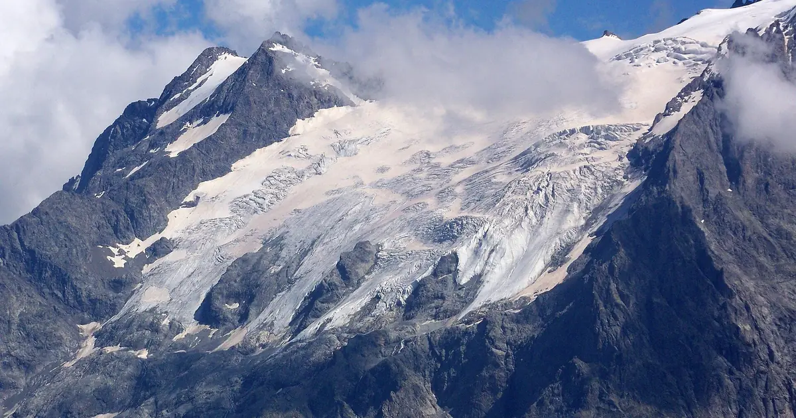

La Grave, mitos y realidades: fuera de pista y nieve bajo la Meije
La Grave es un pueblo pequeño a 1520 m frente a la Meije, una cumbre de 3982 m. Los esquiadores hablan de él entre el respeto y la leyenda, y no todo lo que se dice es cierto. Aquí van cinco ideas comunes, comprobadas con las fuentes de abajo y con nuestro propio histórico de nieve.
Consulta la previsión de nieve en tiempo real de La Grave en la app SnowScopeEspesor de nieve, alertas de nieve polvo y mapa 3D, gratis.
Mito: «La Grave es una estación como cualquier otra»
Realidad: no lo es. Una telecabina en dos tramos sube al Col des Ruillans, a 3200 m, y un telesquí llega al glaciar de la Girose, a 3550 m. Por debajo, el terreno no está pisado. Está vigilado, pero no hay control programado de aludes. El desnivel ronda los 2150 m, hasta 2300 m si se esquía por debajo del pueblo. En la práctica es alta montaña: glaciares, cortados y laderas de aludes, sin pistas pisadas a las que volver.

Mito: «Los expertos pueden ir solos»
Realidad: incluso esquiadores muy buenos contratan aquí un guía de montaña, al menos los primeros días. Los itinerarios cruzan glaciares con grietas, la línea buena cambia con la nieve, y un giro equivocado con niebla puede acabar sobre un cortado. Lee cada mañana el boletín de aludes de Météo-France (BERA), lleva ARVA, pala y sonda y sabe usarlos. Principiantes y esquiadores medios poco seguros harán mejor en elegir otra estación.
Mito: «Allí arriba la nieve siempre es profunda»
Realidad: casi siempre, no siempre. Nuestro histórico sigue el terreno alto servido por los remontes, a unos 3369 m, durante 46 inviernos pasados (1980-81 a 2025-26); son valores de modelo para una zona, no mediciones en los itinerarios. El máximo de un invierno típico allí ronda los 367 cm. Pero el invierno más pobre de nuestra serie se quedó en unos 242 cm y el más nevado llegó a unos 520 cm, y el espesor no dice nada de costras de viento, hielo o placas recientes, que importan más para la seguridad.
Mito: «La primavera es demasiado tarde»
Realidad: la primavera suele ser el mejor momento. Un invierno típico tiene unos 151 cm en diciembre, 230 cm en enero, 267 cm en febrero y 282 cm en marzo, y la nieve suele ser más profunda en abril, con unos 317 cm. En 9 de cada 10 inviernos hay al menos 50 cm durante 25 semanas. La primera nieve suele llegar hacia el 5 de octubre y la última se funde hacia el 18 de junio. Días más largos y nieve más asentada hacen populares marzo y abril, pero las tardes cálidas aumentan el riesgo de aludes de nieve húmeda: sal pronto y vuelve pronto.
Mito: «En cuarenta años no ha cambiado nada»
Realidad: la nieve ha adelgazado incluso aquí. El máximo mediano era de unos 400 cm en nuestros primeros quince inviernos desde 1980-81 y de unos 362 cm en los últimos quince, hasta 2025-26, y los días con nieve en el suelo bajaron de unos 248 a 225. El invierno pasado, 2025-26, estuvo cerca de lo normal, con un máximo de unos 359 cm.
Cómo llegar y dónde dormir
La Grave está en la carretera del Col du Lautaret, entre Grenoble y Briançon: en invierno, comprueba el estado de la carretera antes de salir. El pueblo es pequeño; alójate cerca de la telecabina. Nieve en nuestro mapa no significa que funcione el remonte: consulta los días de apertura en la web oficial antes de viajar. ¿A quién le gustará más La Grave? A esquiadores fuertes que se sienten cómodos en nieve empinada y sin pisar con condiciones cambiantes, a esquiadores de travesía y alpinistas. Las familias y quien busque pendientes fáciles y pisadas estarán mejor en una estación con pistas, y pueden dejar La Grave para un día guiado de grandes paisajes.
Consejos para esquiadores
- Ve con un guía de montaña: La Grave no tiene pistas pisadas ni control programado de aludes.
- Lee cada mañana el boletín de aludes de Météo-France y lleva ARVA, pala y sonda.
- En primavera, sal pronto y deja las laderas empinadas al sol antes del calor de la tarde.
- Comprueba la carretera del Col du Lautaret y los días de apertura del remonte antes de viajar.
Referencias y créditos
- Wikipedia, 'La Grave', retrieved 7 November 2026. en.wikipedia.org/wiki/La_Grave
- Météo-France, mountain weather and avalanche risk bulletin (BERA) for the French massifs. meteofrance.com/meteo-montagne
Sobre estas cifras
Cifras de nieve: histórico de nieve de SnowScope, 46 inviernos pasados (1980-81 a 2025-26) a tres alturas de la estación, un modelo del pasado corregido por altitud (una estimación para una zona, no partes de la estación). Remontes, pistas y acceso: las fuentes de abajo, comprobadas en la fecha indicada.
Boletines oficiales de aludes: Météo-France BERA
Citar este informe
Para investigación, docencia o prensa: cifras y gráficos reutilizables libremente bajo CC BY 4.0 con esta cita.
SnowScope (2026), La Grave, mitos y realidades: fuera de pista y nieve bajo la Meije, https://snowscope.app/blog/es/2026/11/la-grave-myths-and-facts-off-piste-la-meije.html, consultado el 2026-11-09
SnowScope (Atlas Labs). (2026, November 9). La Grave, mitos y realidades: fuera de pista y nieve bajo la Meije. SnowScope snow reports. https://snowscope.app/blog/es/2026/11/la-grave-myths-and-facts-off-piste-la-meije.html
BibTeX
@misc{snowscope2026lagravemythsandfactsoffp,
author = {{SnowScope (Atlas Labs)}},
title = {La Grave, mitos y realidades: fuera de pista y nieve bajo la Meije},
year = {2026},
month = nov,
howpublished = {\url{https://snowscope.app/blog/es/2026/11/la-grave-myths-and-facts-off-piste-la-meije.html}},
note = {Published 2026-11-09 17:16 UTC; accessed 2026-11-09}
}· CC BY 4.0 · Métodos, datos y herramientas →
La Grave: nieve y temperatura según la altura, este invierno vs el pasado (herramientas) →
Sigue La Grave
Gratis: un aviso cuando llega la nieve y la previsión cada mañana.
Más partes de nieve

Combinamos el espesor de nieve de hoy, la nieve nueva de las últimas 72 horas y la previsión para elegir Crissolo, Prali y La Grave. De estas …

¿Hay más nieve que hace un año? Comparamos hoy con el 8 de noviembre del invierno pasado en 4 estaciones en los Alpes: 0 tienen más nieve ahora, …

Parte de nieve en los Alpes, 11 de noviembre. Tres datos, una lista corta: el espesor de nieve de hoy, la nieve nueva de las últimas 72 horas y la …